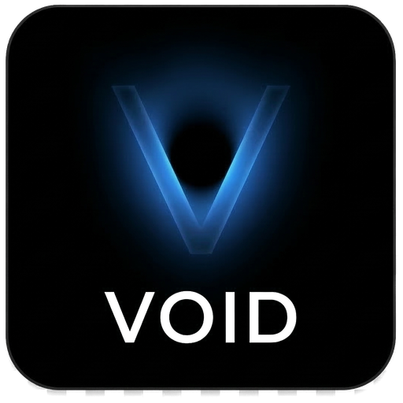

VoidVoid finds and cleans developer build artifacts across 11 ecosystems. One scan, gigabytes back.
curl -fsSL https://raw.githubusercontent.com/eladbash/void/main/install.sh | bash
Blocked-path lists, sentinel file detection, and risk-level classification prevent accidental deletion of important files.
Multi-threaded filesystem walker with concurrent analysis. Scans your entire home directory in seconds.
Rust, Node.js, Python, Go, Java, Docker, Apple/Xcode, Homebrew, JetBrains, .NET, and system caches.
Identifies artifacts that haven't been touched in days or weeks, so you clean what you're not using.
Lives in your system tray. Quick-scan and open the dashboard without leaving your workflow.
Choose scan roots, enable/disable ecosystems, set staleness thresholds, and protect specific paths.